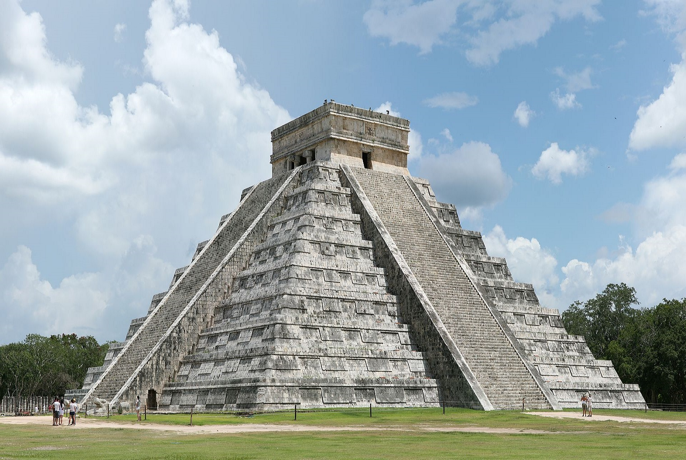

Chichen Itza

Chichen Itza[nb 1] was a large pre-Columbian city built by the Maya people of the Terminal Classic period. The archaeological site is located in Tinúm Municipality, Yucatán State, Mexico.[1]
Chichen Itza was a major focal point in the Northern Maya Lowlands from the Late Classic (c. AD 600–900) through the Terminal Classic (c. AD 800–900) and into the early portion of the Postclassic period (c. AD 900–1200). The site exhibits a multitude of architectural styles, reminiscent of styles seen in central Mexico and of the Puuc and Chenes styles of the Northern Maya lowlands. The presence of central Mexican styles was once thought to have been representative of direct migration or even conquest from central Mexico, but most contemporary interpretations view the presence of these non-Maya styles more as the result of cultural diffusion.
Chichen Itza was one of the largest Maya cities and it was likely to have been one of the mythical great cities, or Tollans, referred to in later Mesoamerican literature.[2] The city may have had the most diverse population in the Maya world, a factor that could have contributed to the variety of architectural styles at the site.[3]
The ruins of Chichen Itza are federal property, and the site's stewardship is maintained by Mexico's Instituto Nacional de Antropología e Historia (National Institute of Anthropology and History). The land under the monuments had been privately owned until 29 March 2010, when it was purchased by the state of Yucatán.[nb 2]
Chichen Itza is one of the most visited archaeological sites in Mexico with over 2.6 million tourists in 2017.
The Maya name "Chichen Itza" means "At the mouth of the well of the Itza." This derives from chi', meaning "mouth" or "edge," and ch'en or ch'e'en, meaning "well." Itzá is the name of an ethnic-lineage group that gained political and economic dominance of the northern peninsula. One possible translation for Itza is "enchanter (or enchantment) of the water,"[5] from its, "sorcerer," and ha, "water."[6]
The name is spelled Chichén Itzá in Spanish, and the accents are sometimes maintained in other languages to show that both parts of the name are stressed on their final syllable. Other references prefer the Maya orthography, Chichen Itza' (pronounced [tʃitʃʼen itsáʔ]). This form preserves the phonemic distinction between ch' and ch, since the base word ch'e'en (which, however, is not stressed in Maya) begins with a postalveolar ejective affricate consonant. The word "Itza'" has a high tone on the "a" followed by a glottal stop (indicated by the apostrophe).[citation needed]
Evidence in the Chilam Balam books indicates another, earlier name for this city prior to the arrival of the Itza hegemony in northern Yucatán. While most sources agree the first word means seven, there is considerable debate as to the correct translation of the rest. This earlier name is difficult to define because of the absence of a single standard of orthography, but it is represented variously as Uuc Yabnal ("Seven Great House"),[7] Uuc Hab Nal ("Seven Bushy Places"),[8] Uucyabnal ("Seven Great Rulers")[2] or Uc Abnal ("Seven Lines of Abnal").[nb 3] This name, dating to the Late Classic Period, is recorded both in the book of Chilam Balam de Chumayel and in hieroglyphic texts in the ruins
Chichen Itza is located in the eastern portion of Yucatán state in Mexico.[10] The northern Yucatán Peninsula is arid, and the rivers in the interior all run underground. There are four visible, natural sink holes, called cenotes, that could have provided plentiful water year round at Chichen, making it attractive for settlement. Of these cenotes, the "Cenote Sagrado" or Sacred Cenote (also variously known as the Sacred Well or Well of Sacrifice), is the most famous.[11] In 2015, scientists determined that there is a hidden cenote under Kukulkan, which has never been seen by archaeologists.[12]
According to post-Conquest sources (Maya and Spanish), pre-Columbian Maya sacrificed objects and human beings into the cenote as a form of worship to the Maya rain god Chaac. Edward Herbert Thompson dredged the Cenote Sagrado from 1904 to 1910, and recovered artifacts of gold, jade, pottery and incense, as well as human remains.[11] A study of human remains taken from the Cenote Sagrado found that they had wounds consistent with human sacrifice
Back to